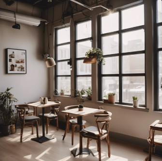
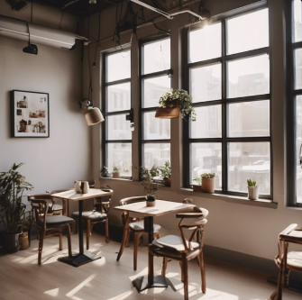

恬典咖啡廳，致力於打造專屬於您的城市秘境。
從踏入店內的那一刻起，映入眼簾的是獨具風格的室內景緻——柔和的燈光、溫潤的木質家具，以及帶著淡淡香氣的綠植點綴，營造出舒適而恬靜的氛圍。無論您習慣靠窗的位置、喜歡沉浸閱讀的角落，或是想與好友分享午後時光，這裡都有一個剛剛好的座位在等著您。
走到後院，則是另一片自然清新的小天地。滿佈綠意的庭院、微風輕撫的空氣，以及簡單卻充滿格調的戶外座位區，讓您彷彿瞬間跳脫城市的喧囂，在繁忙生活之中重新找回平靜。
搭配精心準備的特色甜點、手作蛋糕與飲品，每一道都是店內用心的呈現。不論是甜而不膩的招牌蛋糕、香氣濃郁的咖啡，或是清爽不負擔的特調飲料，都能讓您的悠閒時光更加完美。
此外，恬典咖啡廳也會不定期更換小飾品、桌面擺設或季節布置，讓每一次的造訪都能感受不同的驚喜與新鮮感。每個細節都是為了讓您無論是初次前來，還是常客再訪，都能享受到獨特、愉悅而舒心的優閒時光。

 
